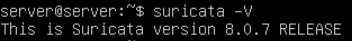
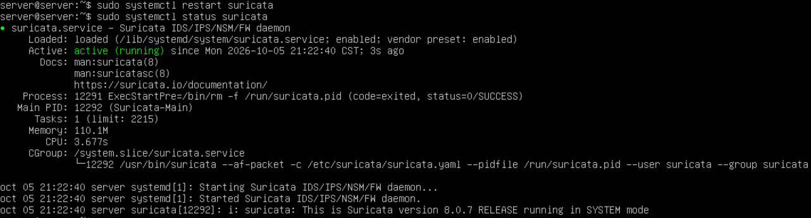
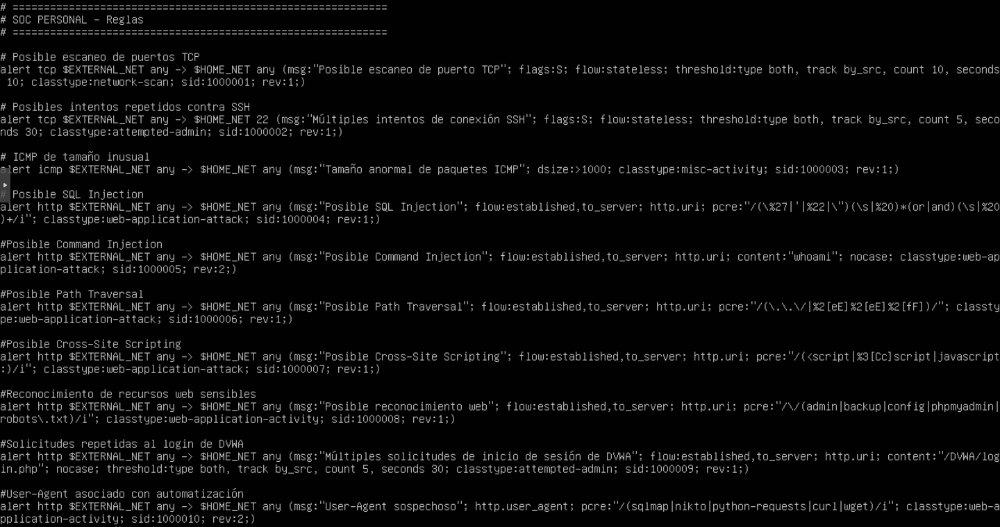
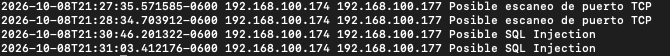
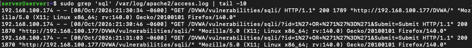
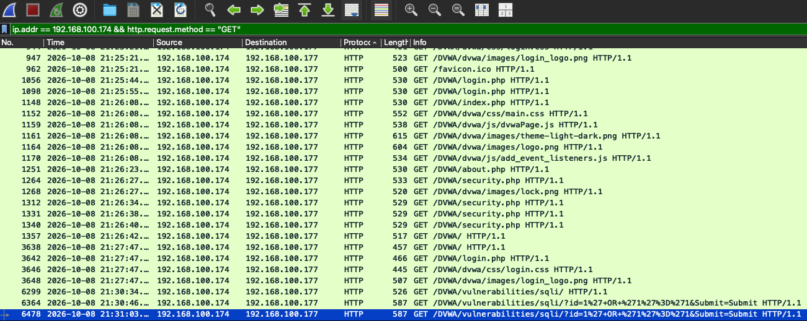
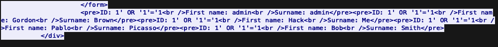
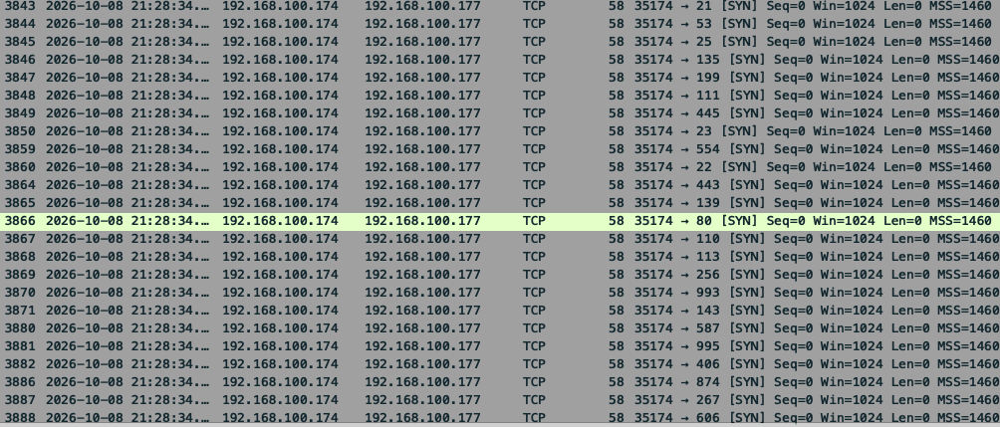
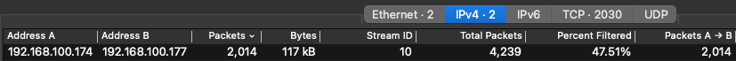
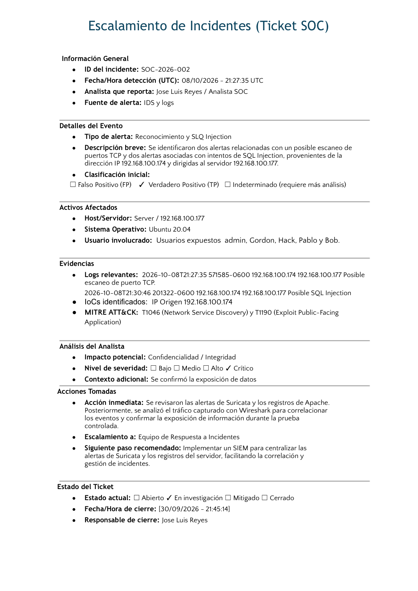

Laboratorio propio
Detección e investigación de actividad sospechosa con Suricata IDS
09 Oct 2026
Objetivo
Detectar e investigar actividad sospechosa en un servidor Ubuntu mediante Suricata IDS, utilizando reglas de detección para identificar posibles amenazas. Durante la investigación, se analizarán las alertas generadas y se correlacionarán con los registros del servidor y el tráfico capturado con Wireshark para determinar el posible impacto de la actividad detectada.
Entorno del laboratorio
Para realizar el análisis se utilizó un entorno controlado compuesto por una máquina Kali Linux y un servidor Ubuntu, donde se alojó la aplicación web vulnerable DVWA y se implementó Suricata IDS para monitorear el tráfico de red.
Kali Linux
192.168.100.174
Equipo de pruebasUbuntu Server
192.168.100.177
DVWA + Suricata IDSAnálisis SOC
Suricata + Wireshark
Alertas, PCAP y logsInvestigación
Anteriormente, se implementó un sistema de detección de intrusiones (IDS) con Suricata para monitorear el tráfico de red e identificar posibles actividades sospechosas dirigidas al servidor y sus servicios.


Se implementaron 10 reglas de detección en Suricata, tomando como referencia los incidentes analizados anteriormente y los riesgos de seguridad web contemplados en OWASP Top 10.

Durante el monitoreo del tráfico de red, se identificaron cuatro alertas generadas por Suricata, relacionadas con un posible escaneo de puertos TCP e intentos de SQL Injection dirigidos al servidor y a la aplicación web. Estas actividades provenían de la dirección IP 192.168.100.174, correspondiente al equipo Kali Linux del laboratorio.

Primero, se revisaron los registros de acceso del servidor Apache para investigar si el intento de SQL Injection tuvo éxito, ya que una posible exposición de información representa un riesgo mayor que el reconocimiento de puertos. Durante el análisis, se identificaron solicitudes HTTP relacionadas con SQL Injection que recibieron una respuesta con código 200 (OK).

Enseguida, se procedió a analizar el tráfico de red con Wireshark para investigar si hubo una posible exposición de información. Para ello, se filtró el tráfico de la dirección IP sospechosa, considerando únicamente las solicitudes HTTP con el método GET.

A través del análisis del flujo TCP (Follow TCP Stream) en Wireshark, se logró confirmar la exposición de información, ya que la respuesta HTTP del servidor contenía datos de cinco usuarios de la aplicación DVWA.

Por último, se logró correlacionar la hora del posible escaneo de puertos con el tráfico de red capturado en Wireshark. Se identificaron múltiples paquetes TCP con la bandera SYN dirigidos a diferentes puertos del servidor, provenientes de la misma dirección IP que generó las alertas en Suricata.


Ticket SOC
Con base en la evidencia recopilada durante la investigación, se documentó el incidente en un ticket SOC para registrar los hallazgos, la clasificación y las acciones recomendadas.
